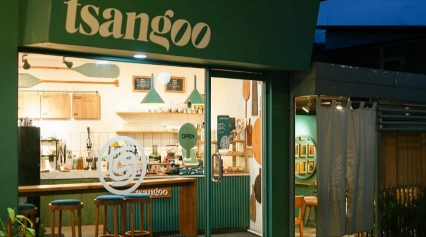
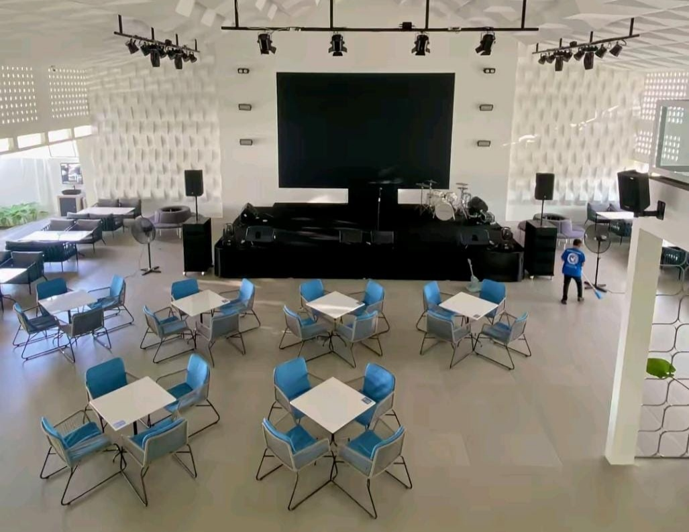
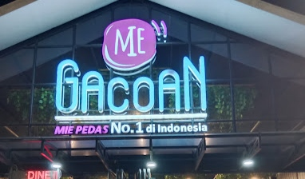

Rekomendasi Tempat Kuliner
Tsangoo
Tsangoo, Rice To Go & Juice Bar adalah restoran yang menyajikan berbagai hidangan nasi dan jus segar, berlokasi di Kuningan, Jawa Barat. Tempat ini menawarkan konsep makanan cepat saji dengan menu yang beragam, cocok untuk dinikmati saat makan siang atau makan malam.
📍 Alamat: Jl. L. L. R.E. Martadinata No.176, Ciporang, Kuningan, Jawa Barat, Indonesia
Restoran ini mengusung konsep modern dengan suasana yang nyaman, menjadikannya pilihan yang tepat untuk bersantap bersama keluarga atau teman.
Erion
Erion Space adalah sebuah tempat kuliner dan kafe yang baru dibuka di Kuningan, Jawa Barat. Tempat ini mengusung konsep modern dengan sentuhan budaya lokal, menciptakan suasana yang nyaman dan estetik, cocok untuk anak muda hingga keluarga yang ingin bersantai sambil menikmati hidangan lezat. Interiornya didesain dengan nuansa hangat, pencahayaan lembut, dan elemen dekoratif yang instagramable.
📍 Alamat: Jl. Siliwangi No.123, Kuningan, Jawa Barat, Indonesia
🕒 Jam Operasional: Setiap hari, pukul 10.00 – 22.00 WIB
Kontak: Telepon: (021) 1234567 Email: info@erionspace.com
Media Sosial: Instagram: @erionspace TikTok: @erionspace
Mie Gacoan
Mie Gacoan adalah jaringan restoran mie pedas terkemuka di Indonesia yang berdiri sejak awal tahun 2016 di bawah naungan PT Pesta Pora Abadi. Dengan konsep bersantap modern dan harga yang terjangkau, Mie Gacoan telah menjadi favorit di kalangan anak muda dan terus berkembang di berbagai wilayah Indonesia, termasuk Jawa Barat.
📍 Alamat: Jl. Aruji Kartawinata, Kuningan, Jawa Barat
Tanggal Pembukaan: Sabtu, 12 April 2025
🕒 Jam Operasional: Pukul 08.00 – 23.00 WIB